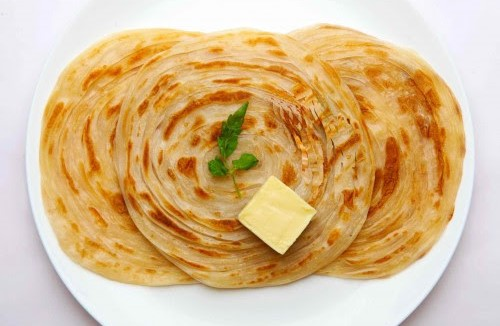
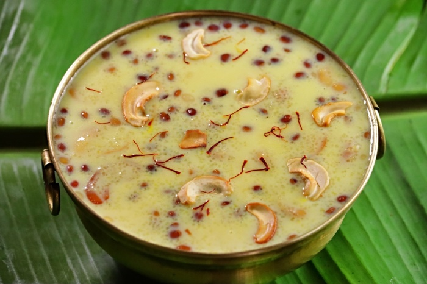

Biriyani is a South Asian rice dish known for its rich ,flavorful and aromatic qualities.its a popular dish with regional variations,
each with unique cooking methods and ingredients.

Parotta(also spelled as Porotta)is a layered indian flatbread,particularly popular in south india. its made with refined flour(maida),
eggs and oil,and is commonly enjoyed in kerala and Tamilnadu.

Payasam is a South Indian dessert traditionally served as prasadam in temples and during fesivals,especially Onam in kerala. its a creamy,
sweet dish made with milk,sugar or jaggery,and various ingredients.
About Us
The biriyani and parotta combo with payasam is a beloved culinary trio that captures the essence of South Indian indulgence. Each element brings a unique flavor and texture, making the meal a satisfying and memorable experience. Biriyani, known for its rich aroma and complex spice blend, is a dish that combines fragrant basmati rice with tender pieces of meat or vegetables. Cooked slowly to allow the flavors to infuse deeply, biriyani is often considered a royal dish, perfect for special occasions.
Parotta, on the other hand, is a flaky, soft, and layered flatbread made with refined flour and cooked on a hot griddle with oil or ghee. Its slightly chewy texture and buttery taste complement the biriyani perfectly, especially when paired with a spicy salna or kurma. The contrasting textures—soft rice, tender meat, and the crispy-chewy parotta—create a delightful balance that elevates the meal.
No South Indian feast is complete without a sweet ending, and that's where payasam comes in. Made with milk, sugar or jaggery, and ingredients like vermicelli, rice, or lentils, payasam is flavored with cardamom, ghee, and nuts. Its creamy sweetness not only soothes the spice-laden palate but also adds a festive, comforting touch to the meal. This combination is a true celebration of flavor, tradition, and satisfaction.